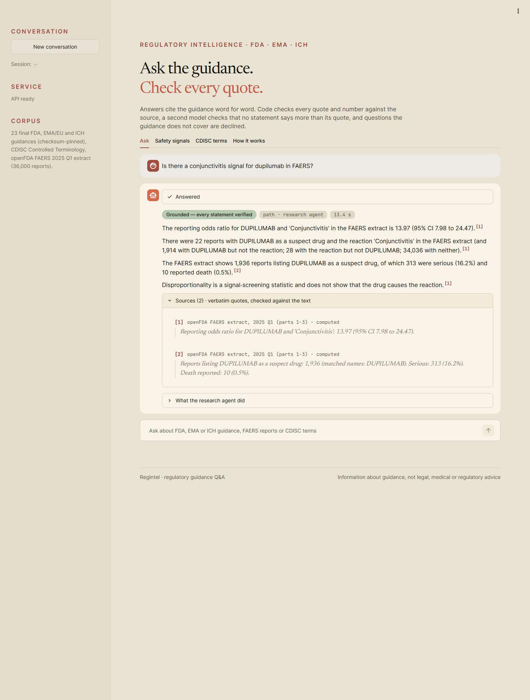
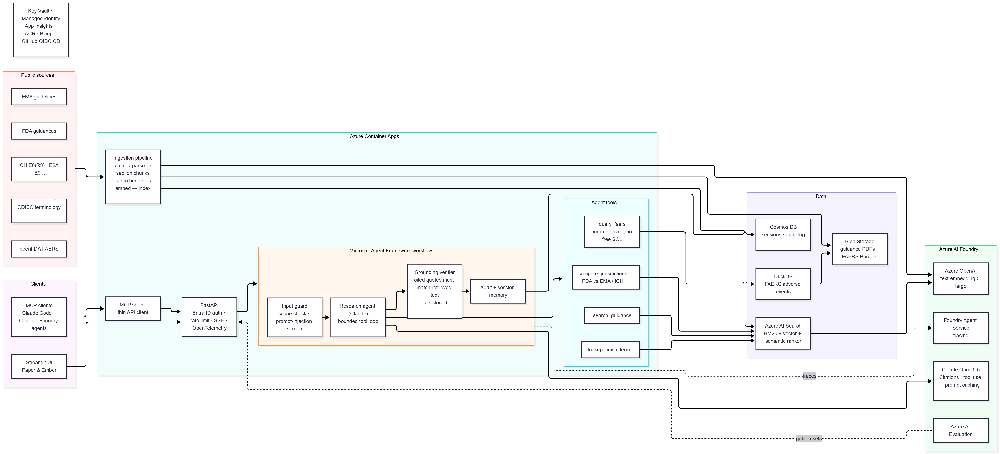
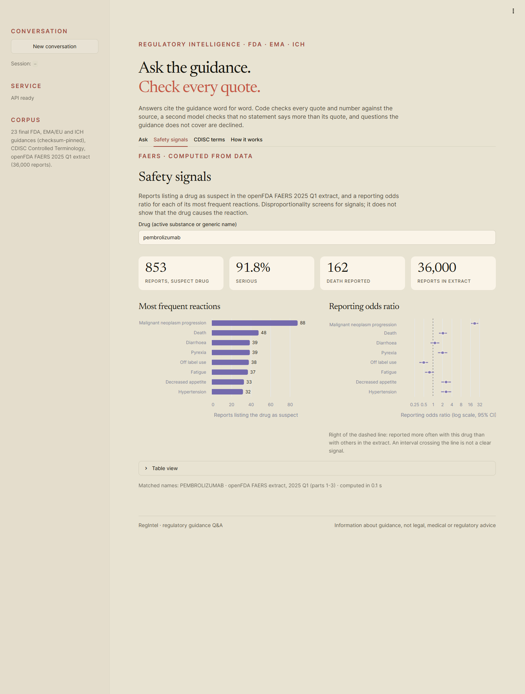

The problem
People in clinical development, pharmacovigilance and regulatory affairs ask precise questions: what acceptance range applies to a bioequivalence study, how fast a fatal unexpected reaction must be reported, which CDISC codelist holds a value. In this domain a confident wrong answer is worse than none, and a citation makes a wrong number more convincing. So the bar is that every claim can be checked, and that the system declines when the guidance doesn't answer.
How it works
A router (one structured-output call) sends each question to the cheapest path that can answer it. Guidance questions go to Azure AI Search knowledge bases (agentic retrieval). A planner splits multi-part questions into sub-queries over 1,869 section-aware chunks, and each chunk carries its section locator and a header naming its document. Questions that need data go to a Microsoft Agent Framework agent, with exact CDISC lookups, FAERS disproportionality computed in DuckDB, and live openFDA label sections and recalls (timeouts, retries, a cache, and no evidence at all when the API is down, so a label that was never retrieved cannot be cited).
Every path ends at the same checks. The writer (gpt-5-mini) returns statements with verbatim quotes.
A verifier in Python removes any statement whose quote isn't in its passage or whose numbers aren't in
its quotes. A reviewer from a different model family (gpt-oss-120b) removes statements that
go beyond their quotes. Answers are labelled grounded, partially grounded, withheld or declined.
Every answer is written to a GxP-style audit trail before it is released: who asked, each source with its checksum, the models and prompt versions, the model's raw draft and every verification decision. Records are hash-chained in Cosmos DB, so a hand edit is reported at the exact record, and any answer can be replayed through the verifier with the same decisions. A small validation pack traces each requirement to the tests that prove it.


It runs on Azure Container Apps, with infrastructure in Bicep and every Azure call made through a managed identity; the only secrets are the API's client keys, generated straight into Key Vault. GitHub Actions deploys over OIDC with an identity that can update two apps and nothing else: about two minutes from a green CI run to a smoke-tested release. Every change lands through a pull request that an offline evaluation gate must pass: retrieval scored on the golden set, 114 recorded and deliberately broken drafts replayed through the verifier, and a check that every changed prompt has a new version.
Results
| Measured | Result |
|---|---|
| Live on Azure: answerable questions answered / unanswerable declined (76 questions over HTTPS) | 64 / 68 · 8 / 8 |
| Live: expected facts in answers · expected source cited | 0.89 · 50 / 52 |
| Live: data questions answered from FAERS, CDISC and openFDA tools | 14 / 16 |
| Live latency p50 / p95 | 13.4 s / 20.3 s |
| Writers from four model families on the same passages, facts recalled (gpt-5-mini · grok-4.7 · Llama 3.3 70B · DeepSeek V3.2) | 0.94 · 0.97 · 0.80 · 0.93 |
| Section chunks vs Azure's integrated chunking: right section first | 0.74 vs 0.62 |
| Multi-part questions with every supporting passage retrieved (planner at medium vs local hybrid) | 9 / 10 vs 4 / 10 |
| Reviewer calibration: planted problems caught · good statements rejected | 8 / 8 · 0 / 13 |
| Trained router (TF-IDF + logistic regression, MLflow) vs the LLM router, on held-out real questions | 0.83 vs 0.96 |
| Audit trail, live: concurrent answers recorded without forking the chain · a hand-edited record detected | 4 / 4 · seq 3 of 5 |
| Prompt-injection attacks that succeeded (the one was data poisoning) | 1 / 13 |

What I learned
Benchmark what the user sees
Minimal planning effort won the retrieval benchmark and lost on answers. Fact recall fell from 0.93 to 0.85, and two trap questions were answered.
Verification and judgement are different tools
An answer with perfect quotes reached a false conclusion. A calibrated reviewer caught it, and then found "should" becoming "must".
Evaluate the deployed system
185 green tests missed a blocked event loop that restarted the container. Seventy real questions found it in minutes.